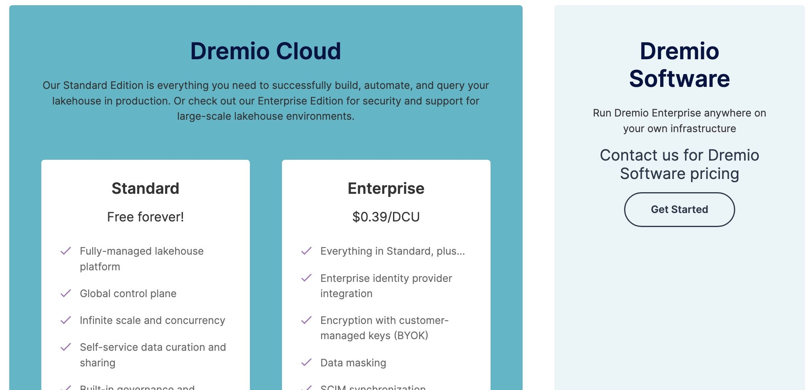
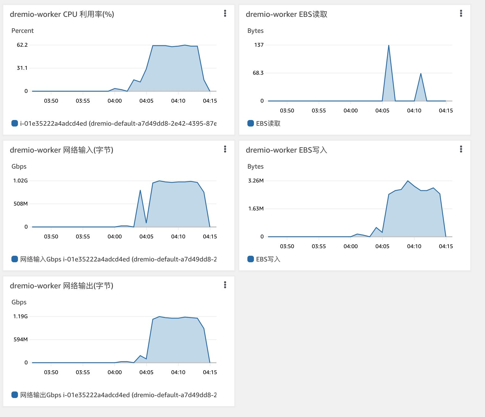
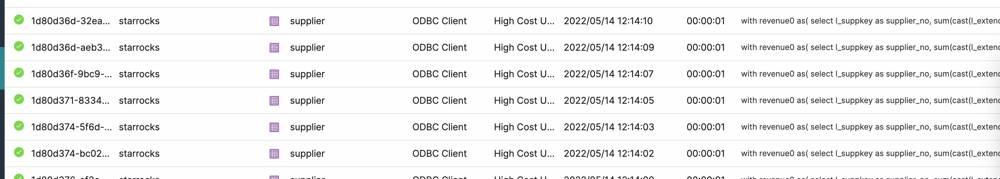
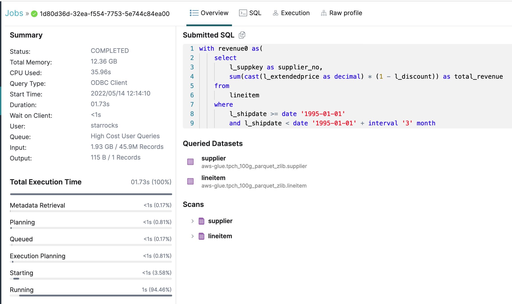
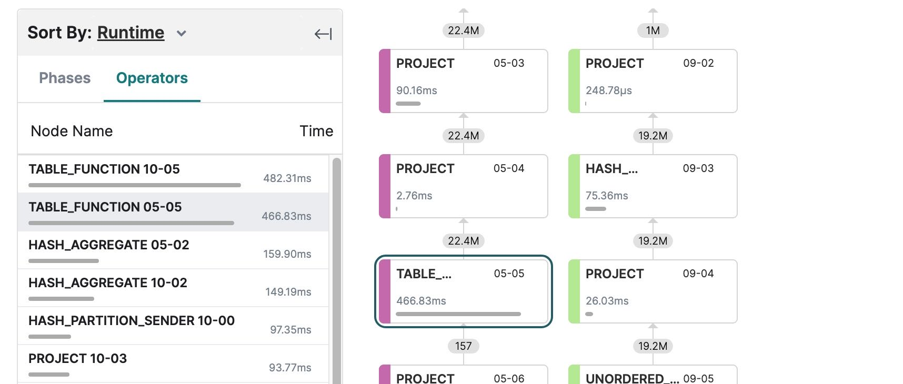
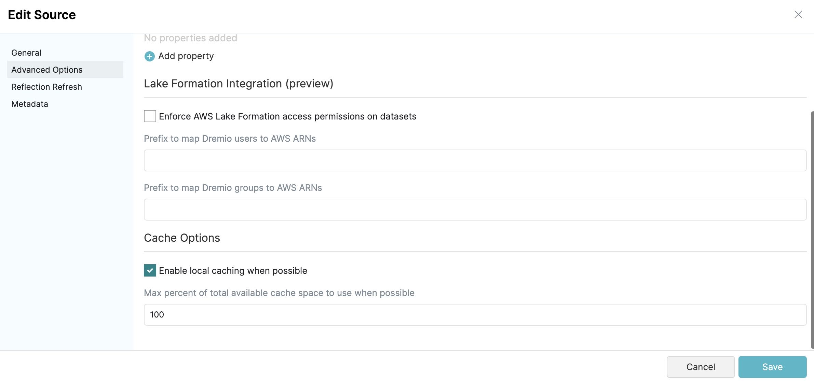
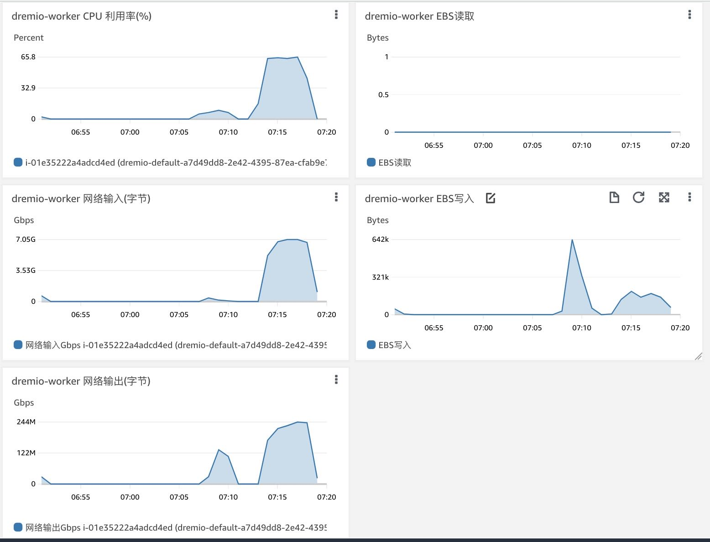
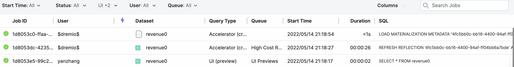
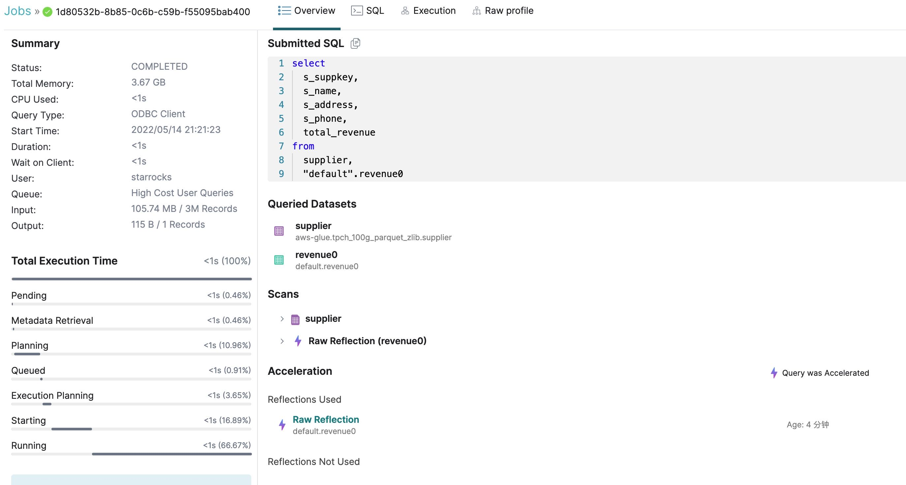
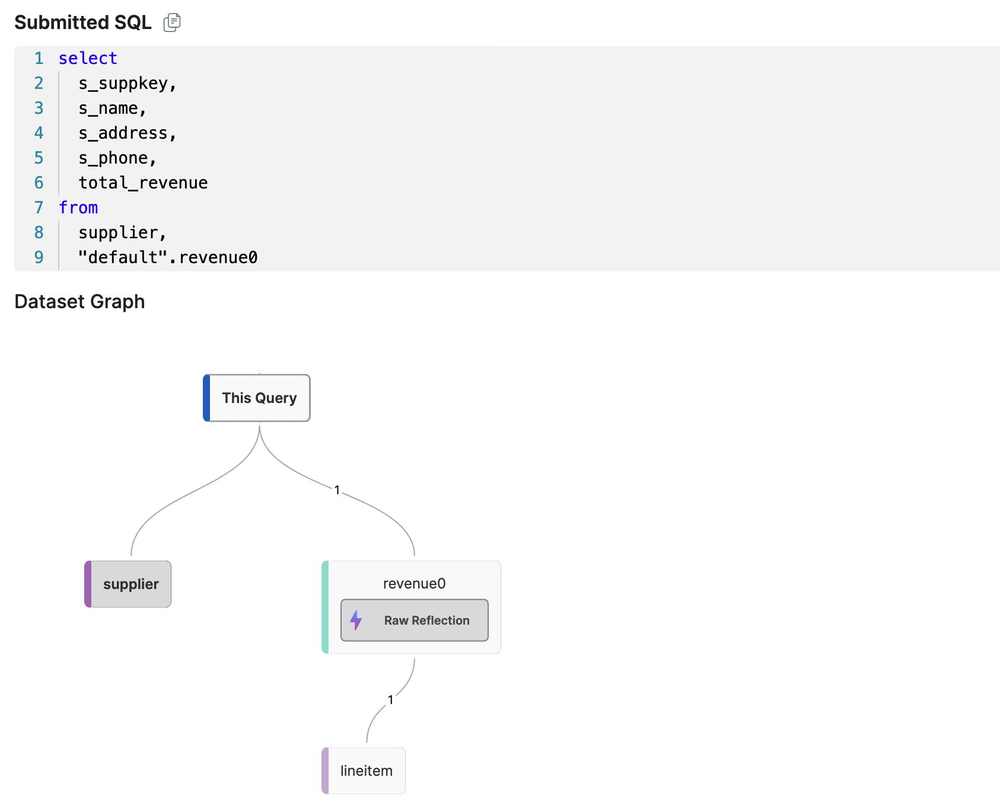

Dremio C3效果分析
Table of Contents
1. 费用分析
参考链接
- https://www.dremio.com/pricing/
- https://www.dremio.com/dcus/
- https://docs.dremio.com/cloud/workloads/engines/
- https://aws.amazon.com/cn/ec2/pricing/on-demand/

从官网上看上去分三种使用方式：
- Cloud Standard. Dremio帮助提供Coord节点，用户自己提供aws账号，然后dremio去aws上创建ec2节点作为engine。但是data source相对有限：aws glue, s3这两种(我估计是iceberg)
- Cloud Enterprise. 完全的SaaS形态，按照DCU进行收费。0.39$ DCU, 如果是small 16DCU, 相当于2 m5d.8xl nodes, Dremio收费是6.24$, 而EC2那边是2.128*2=4.256$.
- Dremio Software. 不清楚，但是使用aws marketplace的话只需要按照ec2价钱收费
2. TPCH/Q15
因为Dremio不支持View，所以将Q15进行改写成为下面SQL, 然后观察运行情况
with revenue0 as(
select
l_suppkey as supplier_no,
sum(cast(l_extendedprice as decimal) * (1 - l_discount)) as total_revenue
from
lineitem
where
l_shipdate >= date '1995-01-01'
and l_shipdate < date '1995-01-01' + interval '3' month
group by
l_suppkey
)
select
s_suppkey,
s_name,
s_address,
s_phone,
total_revenue
from
supplier,
revenue0
where
s_suppkey = supplier_no
and total_revenue = (
select
max(total_revenue)
from
revenue0
)
order by
s_suppkey;
Dremio运行时间在1756ms左右
--> 1671. avg = 1756 --> 1681. avg = 1756 --> 1778. avg = 1756 --> 1730. avg = 1756 --> 1816. avg = 1756 --> 1747. avg = 1756 --> 1681. avg = 1756 --> 1728. avg = 1756 --> 1751. avg = 1756
Dremio资源使用情况如下，CPU使用在60%上下，并且网卡持续有输入和输出。

从界面上来看没有使用Reflections（这个我在后台已经创建过，但是没有使用）然后从Input Size来看差不多使用就是在1GB/s上下。但是最耗时的Table Function(也就是读取+过滤)差不多就占用 482ms上下，这个时间有点夸张。看来Cache加速效果是非常明显的。



3. C3效果分析
Dremio可以选择将cache关闭。如果把cache关闭的话，那么这个查询的延迟会下降到11s上下
running Q15-WITH-AS on dremio --> 12238. avg = 12238 --> 11935. avg = 12086 --> 11812. avg = 11995 --> 10639. avg = 11656 --> 11342. avg = 11593 --> 11042. avg = 11501 --> 12523. avg = 11647 --> 10627. avg = 11519 --> 11198. avg = 11484 --> 12100. avg = 11545

如果看AWS CloudWatch的话，那么看上去带宽使用和SR是差不多的，而且出口带宽也下降了不少。

所以我的怀疑大致是这样的：
- dremio-worker在内存中做了缓存，所以命中了也没有Disk Read
- 比较奇怪的是，即使重启App了也没有看到Disk Read, 数据从哪里来呢？
- zero-copy + sendfile？可能，或许也可能是缓存在了buffer cache的原因。
- 重启机器之后，可以看有大量磁盘读取。
- dremio-worker读没有完全做到Local Read, 所以导致worker之间读取需要去另外一个worker里面要部分数据，所以存在网络输出
- dremio-worker的cache disk并不是使用EBS，而是使用instance storage，相当于本地盘这个东西吧。
下面是一个dremio worker上的磁盘情况, 根目录是EBS, 而/mnt/c1和/mnt/c2则是本地盘。如果看dremio.conf, 的确是使用了这两个盘来做cache的。
[ec2-user@ip-172-31-13-89 ~]$ df -h Filesystem Size Used Avail Use% Mounted on devtmpfs 63G 0 63G 0% /dev tmpfs 63G 0 63G 0% /dev/shm tmpfs 63G 552K 63G 1% /run tmpfs 63G 0 63G 0% /sys/fs/cgroup /dev/nvme0n1p1 8.0G 2.7G 5.4G 34% / 172.31.3.153:/ 8.0E 492M 8.0E 1% /var/dremio_efs /dev/nvme1n1 550G 11G 512G 2% /mnt/c1 /dev/nvme2n1 550G 10G 512G 2% /mnt/c2 tmpfs 13G 0 13G 0% /run/user/1000 [ec2-user@ip-172-31-13-89 ~]$ lsblk NAME MAJ:MIN RM SIZE RO TYPE MOUNTPOINT nvme1n1 259:0 0 558.8G 0 disk /mnt/c1 nvme2n1 259:1 0 558.8G 0 disk /mnt/c2 nvme0n1 259:2 0 8G 0 disk ├─nvme0n1p1 259:3 0 8G 0 part / └─nvme0n1p128 259:4 0 1M 0 part [ec2-user@ip-172-31-13-89 ~]$ cat /opt/dremio/conf/dremio.conf # # Copyright (C) 2017-2019 Dremio Corporation. This file is confidential and private property. # services.coordinator.enabled: false services.executor.cache.pctquota.db: 20 services.executor.cache.pctquota.fs: [] services.executor.cache.path.fs: [] debug.dist.caching.enabled: true paths.local = "/var/lib/dremio/data" paths.spilling: [] zk.client.retry.unlimited: false, zk.client.retry.limit: 7 zk.client.retry.initial_timeout_ms: 300000 zk.client.connection_handle.enabled: true services.node-tag: "default" zookeeper: "172.31.10.156:2181" registration.publish-host: "172.31.13.89" services.executor.cache.path.fs += "/mnt/c1/cache/" paths.spilling += "/mnt/c1/spilling" services.executor.cache.pctquota.fs += "95" services.executor.cache.path.fs += "/mnt/c2/cache/" paths.spilling += "/mnt/c2/spilling" services.executor.cache.pctquota.fs += "95" [ec2-user@ip-172-31-13-89 ~]$ du -sh /mnt/c1/cache/ /mnt/c2/cache/ 9.1G /mnt/c1/cache/ 9.9G /mnt/c2/cache/
Dremio使用了EFS，但是似乎这上面只是存储了每个节点的日志信息，以及thirdparty估计是第三方库使用EFS来进行共享，EFS上并没有存储Cache
[ec2-user@ip-172-31-10-156 ~]$ sudo mount -t efs -o tls fs-0719cd08e6a31df7b:/ efs /home/ec2-user/efs is already mounted, please run 'mount' command to verify [ec2-user@ip-172-31-10-156 ~]$ cd efs/ [ec2-user@ip-172-31-10-156 efs]$ ls log thirdparty [ec2-user@ip-172-31-10-156 efs]$ find log/ | head -10 log/ log/coordinator log/coordinator/server-2022-05-12_11-45-11.gc.0 log/coordinator/tracker.json log/coordinator/archive log/coordinator/archive/tracker.2022-05-13.0.json.gz log/coordinator/archive/tracker.2022-05-12.1.json.gz log/coordinator/archive/metadata_refresh.2022-05-12.log.gz log/coordinator/archive/audit.2022-05-12.0.json.gz log/coordinator/archive/queries.2022-05-13.0.json.gz [ec2-user@ip-172-31-10-156 efs]$ find thirdparty/ thirdparty/
重启机器之后，可以看到存在大量磁盘读取
Device: rrqm/s wrqm/s r/s w/s rkB/s wkB/s avgrq-sz avgqu-sz await r_await w_await svctm %util nvme1n1 0.00 0.00 1789.00 0.00 213612.00 0.00 238.81 0.31 0.23 0.23 0.00 0.06 11.20 nvme2n1 0.00 0.00 1695.00 0.00 211096.00 0.00 249.08 0.48 0.33 0.33 0.00 0.06 10.00 nvme0n1 0.00 0.00 1.00 0.00 4.00 0.00 8.00 0.00 0.00 0.00 0.00 0.00 0.00
4. 物化试图效果分析
为了方便还是使用tpch/Q15进行测试，使用下面SQL创建物化 Raw Reflections
with revenue00 as(
select
l_suppkey as supplier_no,
sum(cast(l_extendedprice as decimal) * (1 - l_discount)) as total_revenue
from
lineitem
where
l_shipdate >= date '1995-01-01'
and l_shipdate < date '1995-01-01' + interval '3' month
group by
l_suppkey
)

使用Raw Relections之后，原本SQL可以改写为
select
s_suppkey,
s_name,
s_address,
s_phone,
total_revenue
from
supplier,
"default".revenue0
where
s_suppkey = supplier_no
and total_revenue = (
select
max(total_revenue)
from
"default".revenue0
)
order by
s_suppkey;
运行时间在 255ms 上下
running Q01 on dremio --> 340. avg = 340 --> 251. avg = 295 --> 248. avg = 279 --> 265. avg = 276 --> 267. avg = 274 --> 239. avg = 268 --> 239. avg = 264 --> 232. avg = 260 --> 245. avg = 258 --> 225. avg = 255
使用Reflection的SQL在Profile的地方会出现闪电标记


5. 部分结论
硬件环境
- us-west-1
- 1 coord(m5d.2xlarge)
- 3 workers(md5.8xlarge/32vCPU/128GB)
软件环境
- Dremio 21.1.2 AWS marketplace
- ssb100G/tpch100G csv->parquet/zlib
- 使用insert into select 创建，并且在hive上执行analyze
- Dremio使用AWS Glue提供目录服务
TPCH Q15性能数据
- With Raw Reflection. it's 238ms
- With Local Cache, it's 1756ms
- Without Local Cache, it's 11995ms
C3效果分析
- TPCH/Q15 Dremio表现很不错
- 如果没有Local Cache, 那么Dremio性能就会差很多
- 之前的跑的测试都使用了Cache, 但是Dremio性能似乎也不是特别好
- 即便不使用Reflection, 也有Local Cache
- Local Cache存储在instance storage/NVMe, 而且挂载了两块盘
- 使用了EFS，但是上面支持存储日志，以及thirdparty